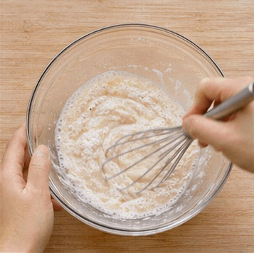

BAKING CLASS · RECIPE 01
桔橙麵包
液種法
把手繪烘焙筆記轉成看得懂、跟得上的教學影片。從前一晚的液種，到雙層麵糰包覆與出爐，按步驟學會製作。
10 顆成品主麵糰 185g外皮 75g12 個示範步驟
目標麵糰溫度26°C
發酵節奏60 → 20 → 40 分
原食譜烤溫220 / 190°C
烘烤時間10 + 10 分鐘
01 / WATCH
先看一遍動作，再開始製作
12 段情境動畫＋繁體中文操作提醒（無旁白）
* AI 模擬雙手與麵糰動作，是協助理解流程的視覺教材；形狀與實際製作可能不同。特別是配方疑點，請先依老師確認後的版本操作。

02 / MEASURE
材料與秤量
依來源照片轉錄，可切換示範顆數，數量等比例換算。
製作數量
A · 主麵糰材料
| 材料 | 原配方 % | 份量 g |
|---|
提醒：液種已在材料 A 中列入 425g，請勿把 B 液種重複加進主麵糰總重。
B · 前一晚液種
| 材料 | 原配方 % | 份量 g |
|---|
操作：混合均勻，依原文冷藏發酵隔夜。旁註另有室溫 26–28°C、30–60 分鐘再冷藏的做法，應由老師確認。
原配方差異：表格液種總重為 425.6g，主配方寫取用 425g，可能是取整，學員請先核對。
03 / PRACTICE
一步一步跟著做
可按「下一步」，逐一觀看手部操作示意及老師提醒。

STEP 01 / 12
製作要點
教師備註 / 待確認事項
04 / TIMING
發酵計時工具
各階段分開計時，時間到會以畫面提示；裝置休眠時請另外使用實體計時器。
05 / TEACHER'S NOTES
正式授課前，建議確認 5 件事
原食譜印刷文字與旁邊的手寫註解有少數不同，這些不應由 AI 自行猜測。
- 液種糖及酵母比例：材料表為糖 4.2g、酵母 1.4g，但製作文字另寫「10%」，不一致；本教材暫依材料表克數呈現。
- 攪拌時間：文字列「慢速 2 分，快速攪至完全擴展」，細項另記 S-3、M-3、S-1、M-7，需由老師確認實際設備與流程。
- 外皮的麵糰：手繪圖將 a 主麵糰與 b 外皮分開處理，但未完整寫明 b 外皮是否於加桔橙丁前預留。
- 烘烤設定：來源只寫「220/190°C，10＋10 分」；上、下火順序與兩段溫度操作需確認，不能直接推定。
- 產量校對：配方約 2,652g，整型合計 2,600g，差約 52g；液種表的 425.6g 與取用 425g 也有小數差。
此教材是 AI 將照片數位化與動作視覺化的第一版教學原型；不是已經由原食譜作者核准的正式版本。